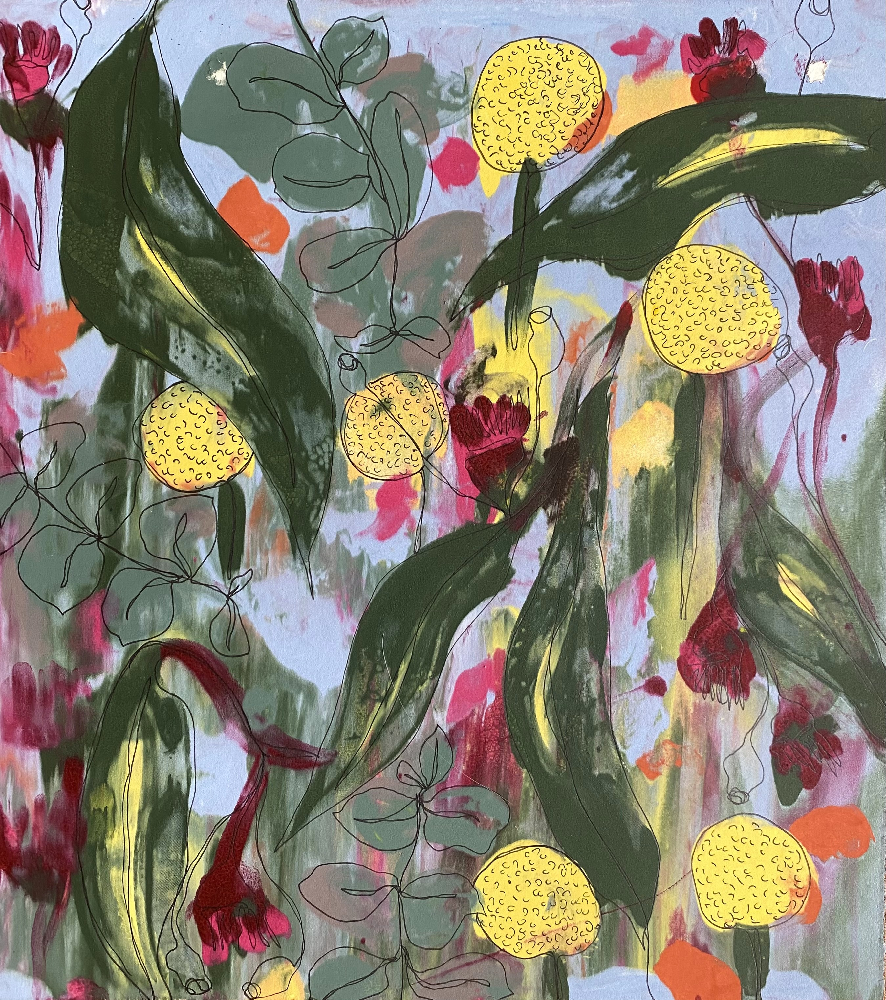

This monoprint is a one-of-a-kind, handprinted artwork. Each print is unique, so no two are ever exactly alike. The design features abstracted native flora, created with attention to texture, colour, and natural patterning. The image shown is an example only; your print may differ slightly, making it truly original.
Printed on 100% cotton paper.
Typical turnaround: 5–7 days for completion, plus additional time for shipping.